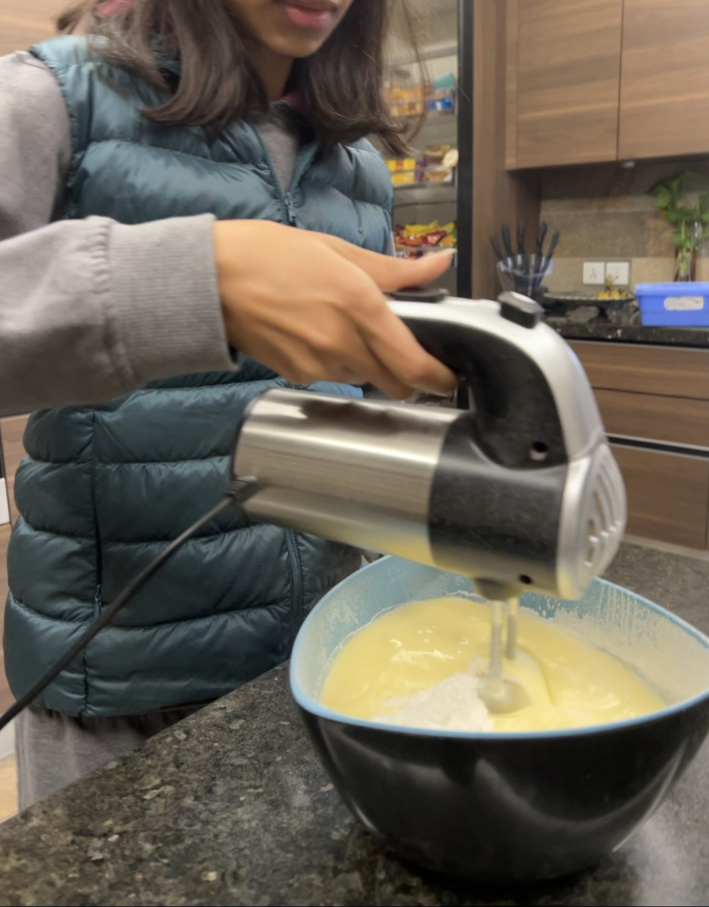
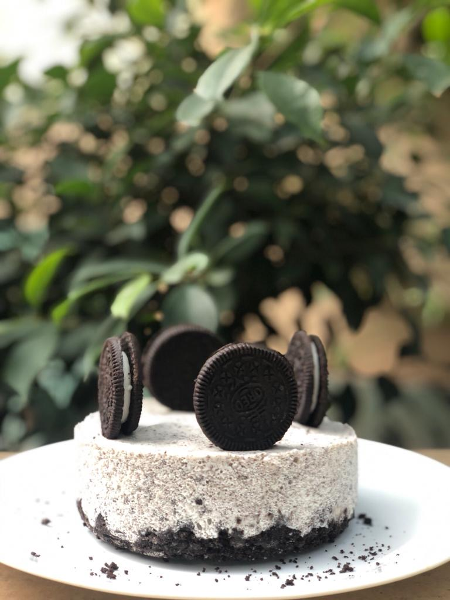

Step 2

Growing up, my mom was always in charge of the kitchen but sometimes, I’d contribute to her culinary adventure, especially on Saturdays which we had designated as a day full of baking. Crushing Oreos for an Oreo cheesecake, melting Lindt chocolate for a chocolate pie, folding the dry and wet ingredients together for an ice cream cake or melting Nutella for Nutella brownies. These were all some of my essential tasks. I loved baking with my mom, I loved watching how a bunch of ingredients transform into a magical dessert. Baking with my mom was a special time in my life that I would not trade for anything. Even when my mom would let me take the lead completely, and not physically bake with me, her sitting there, her presence made it all the more fun and memorable for me. Baking became an excuse to spend some more time with her. “Baking Saturdays” ended one day, and I didn’t even notice when. As I grow older, I realize that during those days, I learnt valuable lessons that apply to baking and to other aspects in my life as well. I learnt to take my time with things and to prepare early on, I learnt that it’s ok if I mess something up whether that is a dessert or not. I learnt to value the time I spent with my loved ones.